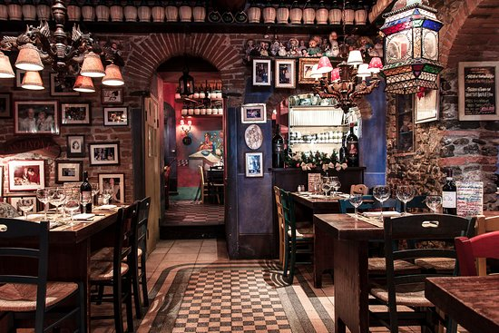

Mi a különbség a trattoria és a ristorante között? És miért érdemes trattoriákba is látogatni a nyaralás alatt? Összegyűjtöttem az okokat! Olaszországban az ebéd, illetve a vacsora ha nem otthon zajlik, akkor trattoriákban vagy ristorantékben (szándékosan nem magyarosítom). Az, hogy melyikbe látogatnak az olaszok, egyrészről az alkalomtól is függ.
A trattoriák kis vendéglők, kevés napi specialitással, amiket a környékbeli termelők friss áruikból főznek meg. Helyi termelői borokat kínálnak az ételek mellé. Szezonális ételek találhatóak meg a menüben és mindig friss alapanyagokból készítik el. Az ételek és az italok a mindennapi dolgozó embereknek szólnak. Nagyon jó az ár-érték arány, olcsóbbat és jobbat máshol nem lehetne enni. Menü 10 eurótól már kapható (ital is benne van)!
A ristoranték több ember befogadására is képesek, ezért ünnepekre, amikor a nagy család összejön, tökéletes választás. Az étlap hosszú, tele a hagyományos specialitásokkal, például mindig van tenger gyümölcse, osztriga, csiga, tengeri sün … akkor is, ha azoknak nincs is szezonja (fagyasztott). Minőségi, drága borokat és full extrás ételeket is kínálnak: gyakran helye a ristorante az üzleti vacsoráknak. A menü árak is borsosabbak, 15-25 euró között mozognak.
Jó tudni: 13 óra előtt ne akarjunk ebédelni. A vendéglők szieszta idejében vannak nyitva 13-16(17)ig. A vacsora pedig nem kezdődik el 20.00 előtt és az éttermekbe, pizzériákba is érdemes helyet foglaltatni! Érdemes jól megnézni az üzleteket, illetve helyiektől tájékozódni hogy hol együnk, mert nem minden trattoria és ristorante mögött vannak olasz helybeli vállalkozók: kínaiak, törökök is jelen vannak a piacon és akármennyire nem szeretnék, ez sajnos az ételek minőségén is érződik.
